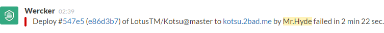

Ultimate Slack Notify Step

Ultimate notifications for wercker build/deploy status to a Slack channel
Icons & Screens
Passed

Failed

Options
Required
-
webhook_url- Slack web hook url. -
channel- Name of the Slack channel you want to send message for.
Optional
-
username- Bot name. (defaultWercker) -
icon_url|icon_emoji- The icon to use for this bot. -
on- Possible values:alwaysandfailed, defaultalways.
Example
Add following variables as deploy target or application environment variables:
SLACK_WEBHOOK_URL and SLACK_CHANNEL
build:
after-steps:
- raizyr/slack-notify:
webhook_url: $SLACK_WEBHOOK_URL
channel: $SLACK_CHANNEL